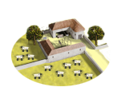
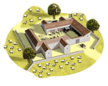
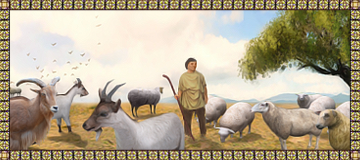

RTR: Imperium Surrectum
RTR: Imperium SurrectumHighland Pastoralism (husbandry)
4 levels, each replacing the one before it — you upgrade in place rather than building alongside.
Slope Pasturing (Husbandry) → Highland Pasturing (Husbandry) → Transhumance (Husbandry) → Great Transhumance Roads (Husbandry)
Levels at a glance
| Level | Cost | Build time | Minimum settlement | Upgrades to | Level | Cost | Build time | Minimum settlement | Upgrades to | ||
|---|---|---|---|---|---|---|---|---|---|---|---|
| Slope Pasturing (Husbandry) | 800 | 2 | town | Highland Pasturing (Husbandry) | Highland Pasturing (Husbandry) | 1,600 | 3 | large town | Transhumance (Husbandry) | ||
 | Transhumance (Husbandry) | 3,200 | 4 | city | Great Transhumance Roads (Husbandry) |  | Great Transhumance Roads (Husbandry) | 4,800 | 6 | large city | — |
Costs in denarii, build time in turns.
Slope Pasturing (Husbandry)

Herding flocks and herds on the lower slopes
As this region has many steep and stony slopes unsuitable for crop farming herdsmen have cleverly been using these to graze their sheep, goats and cattle. And gradually the importance of this husbandry has begun to overshadow the eking out of small harvests from the narrow valleys. A nascent dairy and meat industry is developing and hides and wool are brought to market.
Highland pastoralism is available here because it is a mountains, hills, mountain valley, plateau or karst terrain region.
Note on the effects
Some levels of this building chain might have both positive and negative growth modifiers on the same building, this is due to a modding limitation. In these cases, all effects apply. So if it says +3 growth and -0.5 growth, your total growth is +2.5.
Tip: put any building in the building queue (and only that one) and look at the 'Settlement income' and 'Settlement details' tabs to see its complete effects highlighted in green and red.
| Cost | 800 denarii | Build time | 2 turns | Minimum settlement | town | Upgrades to | Highland Pasturing (Husbandry) |
Requirements — all of these must hold before this level can be built.
- the region does not have the hidden resource
nobuild(nobuilding) - Government Building
- no building tagged
foodis built or queued here (no_other_farm) - the region has the hidden resource
mountains— or — the region has the hidden resourcemountain_valley— or — the region has the hidden resourcehills— or — the region has the hidden resourceplateau— or — the region has the hidden resourcekarst_terrain(highland_pastoralism_chain)
Show the condition as the game files write it
nobuilding and requires_gov and no_other_farm and highland_pastoralism_chain
What it does
- -1 population growth (player only)
Show 7 effects that apply only in the circumstances shown
- +2 farming level — only when
not resource sheep and not resource livestock - +3 farming level — only when
resource sheep or resource livestock - -1 population growth — only when
not is_player and building_present_min_level highland_pastoralism slope_herding - +1 trade income — only when
highland_trade_animals - Additional +1 farming due to resources: livestock, sheep — only when
resource sheep or resource livestock - Trade bonus 10% due to resources: livestock, sheep, honey, medicinal herbs&perfumes — only when
highland_trade_animals - From tier 2 onwards this line will gain trade bonus 10% due to resource: salt — only when
salt_building_supply
Highland Pasturing (Husbandry)

Utilizing highland pastures to support larger flocks and herds
As the competition for good grazing lands on the lower slopes has increased many herdsmen now make the trek up to the highlands. Up here there are natural meadows wholly unsuitable for growing grain but the rich grass and herbs offer trully excellent pasturage. Large flocks of sheep and herds of goats or cattle can now be seen blissfully feeding between the high peaks until they are brought down the mountain for the annual slaughter.
Highland pastoralism is available here because it is a mountains, hills, mountain valley, plateau or karst terrain region.
Note on the effects
Some levels of this building chain might have both positive and negative growth modifiers on the same building, this is due to a modding limitation. In these cases, all effects apply. So if it says +3 growth and -0.5 growth, your total growth is +2.5.
Tip: put any building in the building queue (and only that one) and look at the 'Settlement income' and 'Settlement details' tabs to see its complete effects highlighted in green and red.
| Cost | 1,600 denarii | Build time | 3 turns | Minimum settlement | large town | Upgrades to | Transhumance (Husbandry) |
Requirements — all of these must hold before this level can be built.
- the region does not have the hidden resource
nobuild(nobuilding) - Government Building
- no building tagged
foodis built or queued here (no_other_farm) - the region has the hidden resource
mountains— or — the region has the hidden resourcemountain_valley— or — the region has the hidden resourcehills— or — the region has the hidden resourceplateau— or — the region has the hidden resourcekarst_terrain(highland_pastoralism_chain)
Show the condition as the game files write it
nobuilding and requires_gov and no_other_farm and highland_pastoralism_chain
What it does
- -1 population growth (player only)
Show 9 effects that apply only in the circumstances shown
- +3 farming level — only when
not resource sheep and not resource livestock - +4 farming level — only when
resource sheep or resource livestock - -1 population growth — only when
not is_player and building_present_min_level highland_pastoralism highland_pasturing - +1 trade income — only when
salt_building_supply and not highland_trade_animals - +1 trade income — only when
not salt_building_supply and highland_trade_animals - +2 trade income — only when
salt_building_supply and highland_trade_animals - Additional +1 farming due to resources: livestock, sheep — only when
resource sheep or resource livestock - Trade bonus 10% due to resources: livestock, sheep, honey, medicinal herbs&perfumes — only when
highland_trade_animals - Trade bonus 10% due to resource: salt — only when
salt_building_supply
Transhumance (Husbandry)

The seasonal movement of herds between highland and lowland pastures to seek the best fodder
To take advantage of the very best pastures in both the lowlands and the highlands our shepherds have embraced a near-nomadic existence. Each summer they take the flocks and herds to the high pastures among the peaks and stay there with the animals until it is time to descend once more to the winter pastures. Sometimes the prime summer pastures are hundreds of miles away, perhaps even in a different country, necessitating a great trek indeed! Living far away from any community or master and disregarding all manmade borders does tend to give these herdsmen a dangerous independent streak, with many moonlighting as cattlethieves and raiders.
Highland pastoralism is available here because it is a mountains, hills, mountain valley, plateau or karst terrain region.
Note on the effects
Some levels of this building chain might have both positive and negative growth modifiers on the same building, this is due to a modding limitation. In these cases, all effects apply. So if it says +3 growth and -0.5 growth, your total growth is +2.5.
Tip: put any building in the building queue (and only that one) and look at the 'Settlement income' and 'Settlement details' tabs to see its complete effects highlighted in green and red.
| Cost | 3,200 denarii | Build time | 4 turns | Minimum settlement | city | Upgrades to | Great Transhumance Roads (Husbandry) |
Requirements — all of these must hold before this level can be built.
- the region does not have the hidden resource
nobuild(nobuilding) - Government Building
- no building tagged
foodis built or queued here (no_other_farm) - the region has the hidden resource
mountains— or — the region has the hidden resourcemountain_valley— or — the region has the hidden resourcehills— or — the region has the hidden resourceplateau— or — the region has the hidden resourcekarst_terrain(highland_pastoralism_chain)
Show the condition as the game files write it
nobuilding and requires_gov and no_other_farm and highland_pastoralism_chain
What it does
- -2 population growth (player only)
Show 9 effects that apply only in the circumstances shown
- +5 farming level — only when
not resource sheep and not resource livestock - +6 farming level — only when
resource sheep or resource livestock - -2 population growth — only when
not is_player and building_present_min_level highland_pastoralism transhumance - +1 trade income — only when
salt_building_supply and not highland_trade_animals - +1 trade income — only when
not salt_building_supply and highland_trade_animals - +2 trade income — only when
salt_building_supply and highland_trade_animals - Additional +1 farming due to resources: livestock, sheep — only when
resource sheep or resource livestock - Trade bonus 10% due to resources: livestock, sheep, honey, medicinal herbs&perfumes — only when
highland_trade_animals - Trade bonus 10% due to resource: salt — only when
salt_building_supply
Great Transhumance Roads (Husbandry)

Established and sanctioned routes facilitating large-scale movement across the country
The powers that be have recognized the great economic importance of the seasonal movements of the great herds and have established rights of passage and official tollfree routes for the transhumance. By establishing these routes and officially sanctioning the established custom they also seek to gain a measure of control over the shepherding folk, with limited succes. Many flocks now belong to wealthy patrons who live in the city in the valley. Yet it is still the independent minded shepherds who direct and protect the flocks as they move from one end of the country to the other and from the low valleys to the high meadows.
Highland pastoralism is available here because it is a mountains, hills, mountain valley, plateau or karst terrain region.
Note on the effects
Some levels of this building chain might have both positive and negative growth modifiers on the same building, this is due to a modding limitation. In these cases, all effects apply. So if it says +3 growth and -0.5 growth, your total growth is +2.5.
Tip: put any building in the building queue (and only that one) and look at the 'Settlement income' and 'Settlement details' tabs to see its complete effects highlighted in green and red.
| Cost | 4,800 denarii | Build time | 6 turns | Minimum settlement | large city |
Requirements — all of these must hold before this level can be built.
- the region does not have the hidden resource
nobuild(nobuilding) - Government Building
- no building tagged
foodis built or queued here (no_other_farm) - the region has the hidden resource
mountains— or — the region has the hidden resourcemountain_valley— or — the region has the hidden resourcehills— or — the region has the hidden resourceplateau— or — the region has the hidden resourcekarst_terrain(highland_pastoralism_chain) - the region does not have the hidden resource
karst_terrain(not_karst_terrain) - the region does not have the hidden resource
plateau(not_plateau) faction_highland_farming
Show the condition as the game files write it
nobuilding and requires_gov and no_other_farm and highland_pastoralism_chain and not_karst_terrain and not_plateau and faction_highland_farming
What it does
- -4 population growth (player only)
Show 9 effects that apply only in the circumstances shown
- +7 farming level — only when
not resource sheep and not resource livestock - +8 farming level — only when
resource sheep or resource livestock - -4 population growth — only when
not is_player and building_present_min_level highland_pastoralism great_droveways - +1 trade income — only when
salt_building_supply and not highland_trade_animals - +2 trade income — only when
not salt_building_supply and highland_trade_animals - +3 trade income — only when
salt_building_supply and highland_trade_animals - Additional +1 farming due to resources: livestock, sheep — only when
resource sheep or resource livestock - Trade bonus 20% due to resources: livestock, sheep, honey, medicinal herbs&perfumes — only when
highland_trade_animals - Trade bonus 10% due to resource: salt — only when
salt_building_supply
What the shorthands in those conditions stand for (9)
| Shorthand | Stands for | Shorthand | Stands for | Shorthand | Stands for | Shorthand | Stands for |
|---|---|---|---|---|---|---|---|
faction_highland_farming | factions { paeonia, bessi, axum, cappadocia, cilicians, lycia, paphlagonia, nabataea, thamud, lihyan, ordovices, silures, caledonii, armenia, armenia_minor, colchians, iberians, sophene, commagene, heniochi, mossynoeci, anartes, taurisci, buri, crobyzi, teurisci, allobroges, boii, galatians, tylis, volcae, apuani, ingauni, salassi, cenomani, cadurci, volcae_gallia, arverni, helvetii, vindelici, norici, breuni, ambrones, acarnania, achaea, aetolia, argos, kydonia, lyttos, selge, thessaly, trapezus, sarsinates, antigonid, bactria, epirus, lysiad, megalopolis, arevaci, edeta, lusitani, astures, basti, cantabri, carpetani, celtici, gallaeci, ilergetes, lacetani, oretani, vaccaei, vascones, vettones, belli, ardiaei, histri, liburni, iapodes, delmatae, daesitiates, labeatae, dardania, illyrian_kingdom, picentes, sarsinates, samnites, lucanians, corsi, bruttians, mamertines, sardinians, osrhoene, masaesyli, massylii, mauri, atropatene, persis, saba, qataban, himyar, saka, asti, dentheletae, maedi, } | highland_pastoralism_chain | hidden_resource mountains or hidden_resource mountain_valley or hidden_resource hills or hidden_resource plateau or hidden_resource karst_terrain | highland_trade_animals | resource sheep or resource livestock or resource perfumes or resource honey | no_other_farm | no_building_tagged food queued |
nobuilding | not hidden_resource nobuild | not_karst_terrain | not hidden_resource karst_terrain | not_plateau | not hidden_resource plateau | requires_gov | building_present governmentA or building_present governmentB or building_present governmentC or building_present governmentD or not is_player |
salt_building_supply | resource salt or hidden_resource salt_supply_built factionwide |